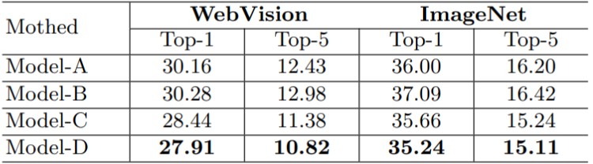
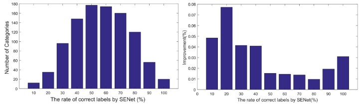
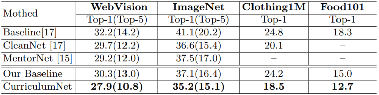
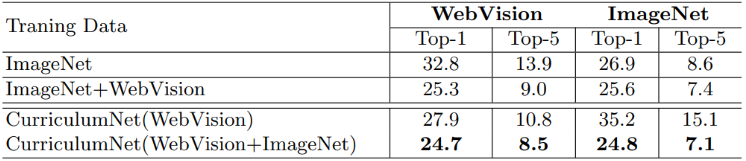

論文
・ Year ： ECCV2018
・ リンク
・ github
１．どんなものか
インターネットから収集したアノテーションの付いていない大規模な弱教師ありデータを対象に カリキュラム学習を適用する．大量のノイズデータや不均衡に対して，特徴空間におけるデータの 分布密度によりデータの易～難を定め，簡単なデータから順にモデルに学習させる．
２．先行研究との差分
クレンジングや半教師あり学習，ノイズロバスト学習についての研究ではなく，新たな学習法の提案を行っている．
３．技術や研究のキモ
カリキュラムの設定
カリキュラム学習とは名前の通り，学習の方針を設計しそれに従いモデルを学習させる学習法であり，
この論文では，モデルの簡単なデータから順に学習させた方が良いのではないかという直観的なアイデア
のもとカリキュラムを作成する．
カリキュラムの設計法
教師なし画像に対してデータの識別の難易度をソートすることを目的とする．
具体的にはデータ密度分布を用いてサンプルの複雑さを測定する．ウォームアップ
させたモデルの全結合層特徴量を用いて，各カテゴリに属するデータとその他全データ
とのユークリッド距離を計測．
$$D_{ij} = ||f(P_i) - f(P_j)||$$
ここでfが全結合層特徴量へ射影する関数．$P_i$が全データで$P_j$が各カテゴリに属するデータ．
Dの値が小さいほど互いに類似したデータである．
このように距離$D_{ij}$を計測して，その上位k%までを類似しているデータとする．ここで局所密度を以下の式を用いて計測する．
$$\rho_i = \sum_j X(D_{ij} - d_c)$$
$$
X(d) = \left\{
\begin{array}{ll}
1 & (x \geq 0)\\
0 & (x < 0)
\end{array}
\right.
$$
つまり，一定以上近くにある類似しているデータ数を用いて密度を推定している．
クラスタの中心点については以下の式による距離を定義
$$
\delta_i = \left\{
\begin{array}{ll}
min_{j:\rho_j>\rho_i} (D_{ij}) & (if /exists j s.t. /rho_j>\rho_i)\\
max(D_{ij}) & (otherwise)
\end{array}
\right.
$$
これは近傍にある類似データが多いデータのもつDの最小値をクラスタ中心にして，
自身以上に類似データ数が多いデータがない場合は，自身がクラスタの中心とみなしているということ．
※長々と書きましたが，実際の実装ではk-meansでクラスタリングしてクラスタ中心からの距離計測で実装しているっぽい
４．有効性の証明
webvision,ImageNet,Clothing1M,Food-191Nの４つのデータセットで実験．
モデルA～Dは順に
・学習データ全体をそのまま学習に用いた場合
・クリーンサブセットのみを用いた場合
・提案手法により，クリーンセット，ノイズセットの２つのカリキュラムで学習させた場合
・提案手法で，クリーン，ノイズ，高ノイズの３つのカリキュラムで学習させた場合を示している．


また，クリーンサブセットを用いた場合の実験結果は以下の通り，


５．議論
特になし